library(dagitty)
library(ggdag)GEOG 6960 Causality in Geog. Studies 5
Introduction
In this lab, we’re going to explore how to build and analyze directed acyclic graphs (DAGs) with DAGitty. We’ll also briefly introduce R and Python packages that work with DAGs. This tutorial is lightly modified from the DAGitty tutorial located here.
Getting Started
Go to Dagitty.net and click on “Launch DAGitty Online in your Browser”. This will open the main DAGitty screen, with an example DAG. The screen is split into three panels:
- The left panel has options to modify the existing graph
- The center contains the main canvas with the DAG
- The right shows information about the current DAG (independnce, adjustment, etc)
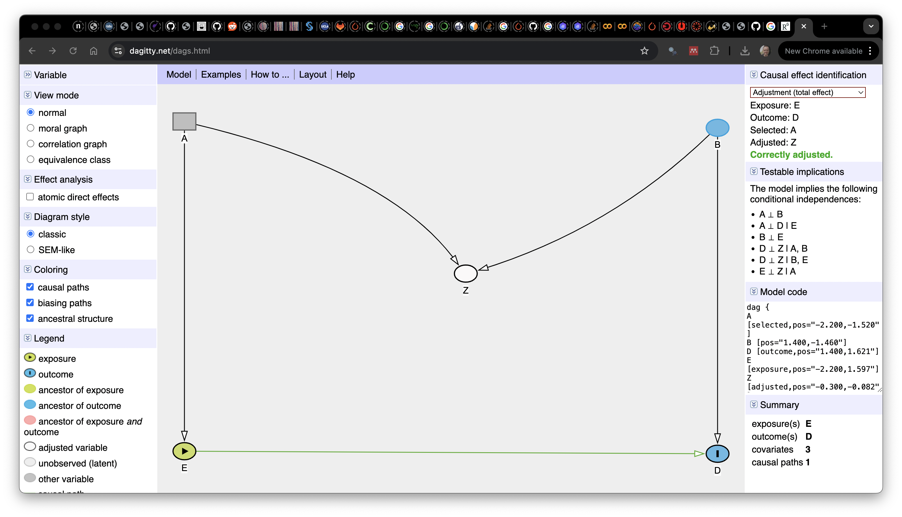 ## Building a Diagram
To create a new DAG, go to the [Model] menu at the top of the center panel and select [New Model], to open a blank canvas. You can now add variables to this by clicking on an empty part of the diagram. You will be asked to give the variable a name. For now, create two variables (X and Y):
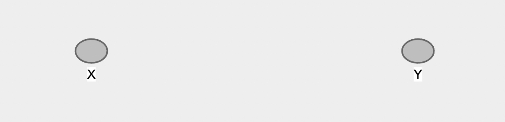
If you look at the right panel, you’ll see that the Model code starts to fill out. This is the code description of the model you are creating, and can be used in the offline version of DAGitty. You can also modify this directly, e.g. to set the coordinates of eahc node by hand.
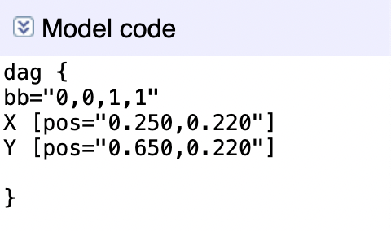
Now, let’s add an edge connecting X and Y. To add an directional arrow (X->Y), first click on X and then on Y. You can remove an existing arrow in the same way. Once you have an arrow from X to Y, you can create a double-headed arrow by reversing this, i.e. clicking first on Y then on X.
If you hover the cursor over the arrow, you’ll see it change to a 4-way arrow. You can now click and drag the arrow to maked it curved. Similarly, you can click-and-drag the variables themselves.
Variable Characteristics
Once you have some variables and arrows on your graph, you may want to manipulate them. If you click on the X variable, it will be highlit with a thick border. You can now use the top-left menu on the left to modify this.
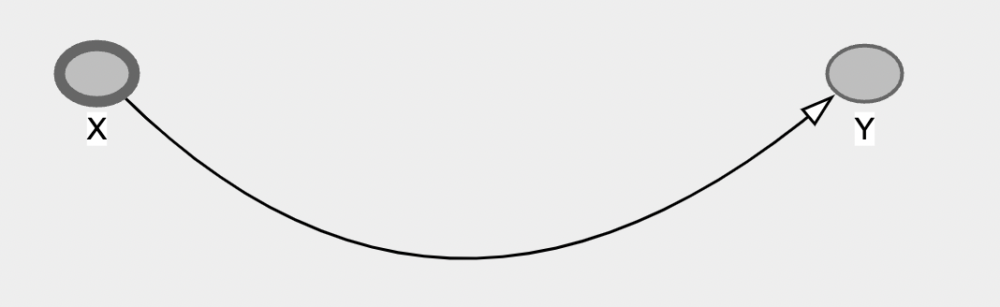
You can delete or rename from this menu, but most importantly for causal models, you can set the exposure or treatment variable and the outcome variable by clicking the appropriate check box in this menu. Use this to set X as the exposure and Y as the outcome:
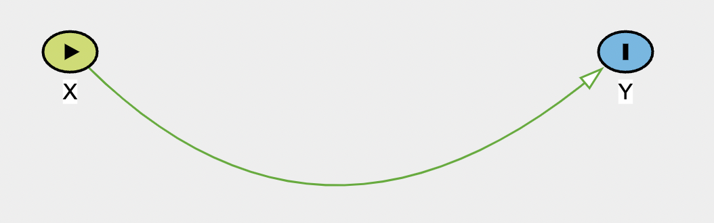
The exposure variable is now represented as a green node with an arrow, and the outcome as a blue node with a vertical line. You’ll also notice that the arrow between them turns green, indicating a causal path (you can check this on the legend at the bottom of the panel).
DAGitty also has a series of hotkeys for working with the variables:
e: sets the selected variable as the exposureo: sets the selected variable as the outcomea: sets the selected variable to be controlled or adjustedu: defines an unobserved variable (this is something that is theoretically important, but that you don;t have data for)d: deletes the selected variabler: renames the selected variable
Now let’s add the third variable Z as a confounder. Click on an empty part of the diagram, create a variable Z, and create arrows from it to both X and Y
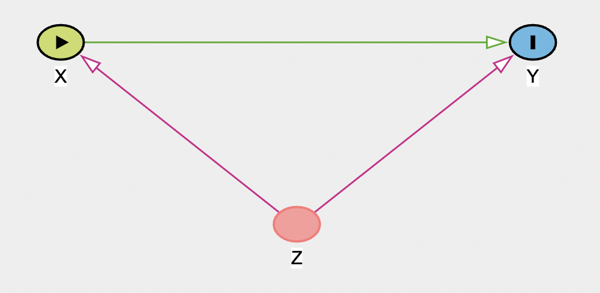
Once you add both parts, they (and the Z node) will turn purple, indicating a biasing path - a variable that can bias your estimation of a causal relationship. We can get more information about this (and the graph in general) in the right panel.
DAGitty Diagnostics
The right bar of the screen contains lots of information about your graph.
At the top you’ll see that it gives you the Minimal Adjustment Sets. Given the defined exposure and outcome, this shows if a biasing (or a backdoor) path is open. Here there is one and further down in the panel it shows which variables have to be controlled for (or adjusted) to get an unbiased estimated of the causal effect. By default this should be set to the ‘total effect’, so this shows what adjustment is necessary to obtain the total causal effect. We’ll look below at how to use this to identify direct effects. For this graph, the only required adjustment is on Z, the confounding variable.
Remember that the exposure and outcome variables must be set properly for this to work. It will also pay attention to the variables you’ve set to be unobserved, or the variables you’ve said you’ve already adjusted for. The diagram itself also has information. Any lines that are purple represent arrows that are a part of an open back door. Lines that are green represent the causal effect of interest (either direct or indirect). And lines that are black are neither. If you forget the colors, check the legend in the bottom-left panel.
In the second panel on the right you can see the testable implications of the model. This list all independencies in the model (marginal or conditional) between variables, and so implies any relationships that could be tested. There are no independencies in this graph, but to show what this shows, add a new ancestor variable A, that feeds into X.
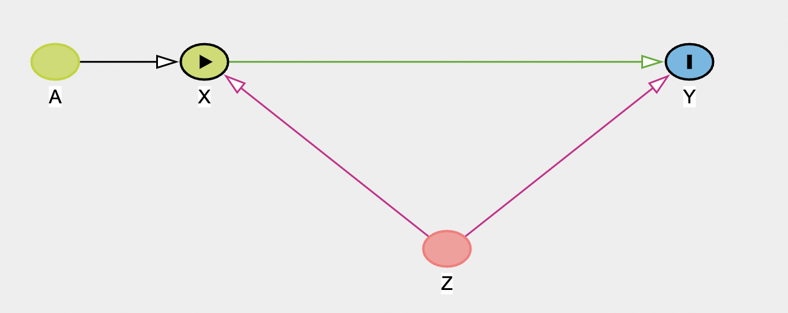
If you now look at the testable implications panel, it shows two independencies:
- \(A\perp\!\!\!\!\!\perp Y|X,Z\): A and Y are conditionally independent if X and Z are controlled/adjusted. So, adjusting for X and Z, A and Y should be unrelated. If you have data for all of these variables, you could then test these with a model (i.e. model
Y ~ A + X + Z. If no significant relationship was found betweenY ~ A, this would support the DAG. If you found they were related, you’d know the graph was wrong and needed to be updated. This notion of the important of dependencies/independencies will be important in structural equation modeling. - \(A\perp\!\!\!\!\!\perp Z\): A and Z are fully independent (i.e. there’s no path that links them together)
Other graphs
Collider
Now make a new graph to represent a collider. Use X as the exposure, Y as the outcome, and Z as the collider. As a reminder, the collider has arrows coming in from both the exposure and outcome.
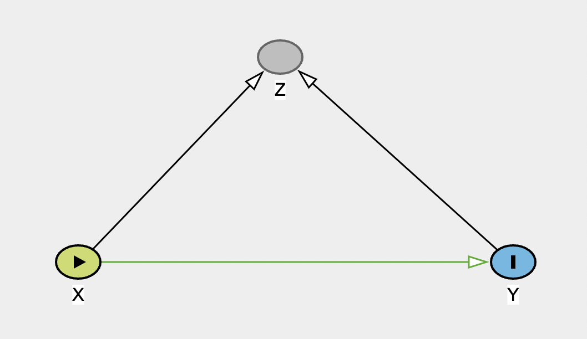 When you have built it, there should be no open biasing paths. Try adjusting for Z to see the impact on the graph, and on the information on biases.
Chain
And now make a graph representing a chain:
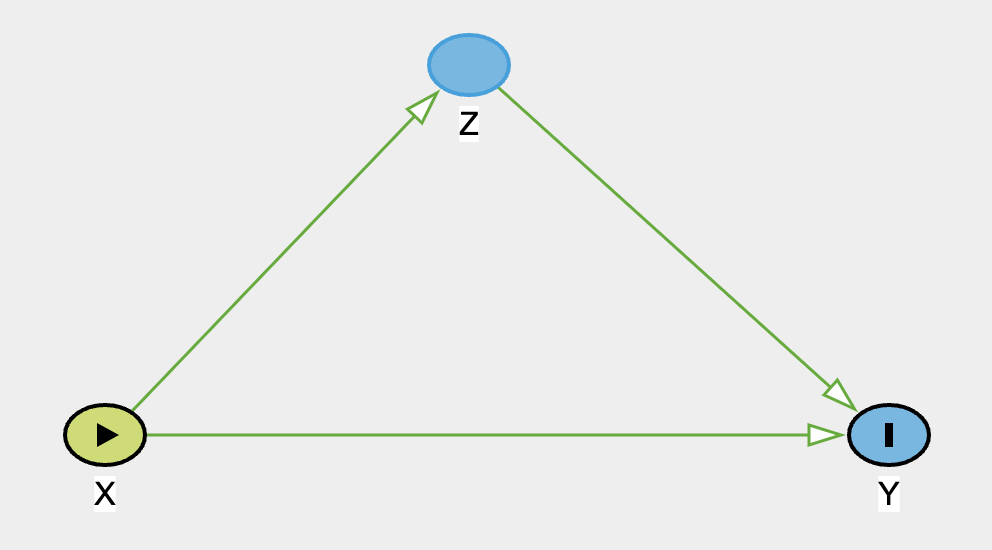
Note that this graph shows the two causal pathways in green: direct (X-> Y) and indirect (X -> Z -> Y). In the top-right, there is no adjustment set listed, as DAGitty is looking at the total effect (i.e. the direct + the indirect). If you now change the drop-down menu to show the adjustment for the direct effect, it will list Z, and state that there are biasing paths. If you now modify Z so that it is adjusted, the bias is removed, so this model would return an unbiased estimated of the direct effect.
Grace and Keely (2006)
As a more complex example of a DAG, we’ll now use DAGitty to recreate the DAG from Grace & Kelly’s 2006 paper. Create a new model in DAGitty, andd then start adding the variables and paths in the figure below (feel free to shorten the variable names).
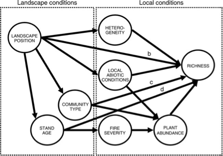
Once you have made the DAG, set fire severity as the exposure and richness as the outcome. Before we look at the adjustment sets, take a quick look at the ‘Testable assumptions’. There are a large number listed here, but all of these indicate a potential missing or blocked path. To illustrate why this is useful, let’s consider the first one listed: \(\mbox{Landscape Position}\perp\!\!\!\!\!\perp \mbox{Fire Severity}|\mbox{Stand Age}\). This implies that if we control for stand age, there should be no remaining relationship between fire severity and landscape position. This follows the graph, which indicates that the stand age is a causal result of the position on the landscape (i.e. the spatial context) and the fire severity is a causal result of age. It’s important to note here that this is the assumption made in creating the diagram, but we could now go ahead and test this. If we had data on landscape position, stand age and fire severity, we could build the following model:
severity ~ landscape + stand_ageIf a non-significant relationship was found with landscape, this would support our DAG. We could continue this and explore the other implications in the same way, all of which would help either support the graph, or lead to modifications.
The graph also shows a number of biasing paths. Check the top right - what variable(s) do you need to adjust or control for to remove these biases? Try adjusting these and see if it resolves the problem. From this, what variables would you need in a model to estimate the causal effect of fire severity on richness?
richness ~ fire_severity + ...Mosquito net example
Next, we’ll reproduce the DAG illustrating the effects of mosquito net use on malaria risk, taken from Andrew Heiss’ blog and shown below.
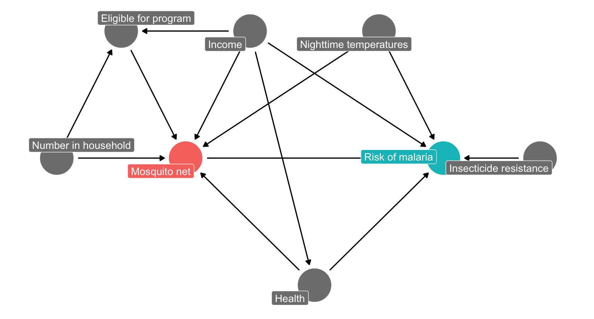
As before, start by adding and naming the relevant nodes, then add the links between them. If you are stuck for time, you can also copy-paste the DAG code below into the ‘Model code’ box on the right panel to make the graph.
dag {
bb="0,0,1,1"
"Household number" [pos="0.140,0.400"]
"Malaria risk" [pos="0.540,0.400"]
"Mosquito net" [pos="0.340,0.400"]
Eligible [pos="0.140,0.200"]
Health [pos="0.440,0.600"]
Income [pos="0.340,0.201"]
Resistance [pos="0.740,0.400"]
T_night [pos="0.540,0.200"]
"Household number" -> "Mosquito net"
"Household number" -> Eligible
"Mosquito net" -> "Malaria risk"
Eligible -> "Mosquito net"
Health -> "Malaria risk"
Health -> "Mosquito net"
Income -> "Malaria risk"
Income -> "Mosquito net"
Income -> Eligible
Income -> Health
Resistance -> "Malaria risk"
T_night -> "Malaria risk"
T_night -> "Mosquito net"
}Now set the exposure (Mosquito net) and the outcome (malaria risk). Check the top right panel for the adjustment set (this should be Health, Income and Nighttime temp). Each of these is a confounder in the model: - Health: poor health increases both risk and likelihood of net use - Income: increases likelihood of net use but decreases risk (e.g. air conditioner use) - Temperatures: Increases risk (mosquito activity) and may decrease net use
Make these adjustments, and check that your new, adjusted graph has no more biasing paths (it should say Correctly adjusted in the top right panel). Given these adjustments, what would your model need to include?
malaria_risk ~ mosquito_net + ...Asa test, you can now see what would happen if we were to update the graph. We’ll imagine that the eligibility for the government funded net program also depends on whether the mosquitos in an areas are resistant. Add a path from resistance to eligibility and see how it changes the model. What would now need to include in your model to correctly adjust it?
Coding DAGs
Both R and Python have packages that allow to create DAGs programmatically:
- R: dagitty and ggdag
- Python: causalgraphicalmodels (note this only seems to work in Python 3.9 or earlier). You will also need graphviz and possibly python-graphviz to render the graphs
We’ll illustrate these very quickly here with a subset of the Grace and Kelly DAG (stand age, fire severity, plant abundance and richness). Fist load the relevant packages:
from causalgraphicalmodels import CausalGraphicalModelCreating a DAG
We’ll start by creating the DAG. In R the main function is dagify(). This takes a series of arguments:
- The set of paths to include. These are specified using R’s formula syntax, with the destination node on the left hand side and the origin on the right. So
X ~ Ywould make a path going fromXtoY. Note that ifYhas more than one path pointing to it, you should include both in the same formula. SoY ~ X + Z, with have two paths to Y fromXandZrespectively - The coordinates specifying the position of each node
- Which variable to use for the exposure and outcome [optional]
- Labels for each node [optional]
grace_dag <- dagify(fire_sev ~ stand_age,
abundance ~ fire_sev,
richness ~ abundance + stand_age,
coords = list(x = c(stand_age = 1,
fire_sev = 2,
abundance = 3,
richness = 4),
y = c(stand_age = 1,
fire_sev = 1,
abundance = 1,
richness = 2)
),
exposure = "fire_sev",
outcome = "richness",
labels = c(stand_age = "Stand age",
fire_sev = "Fire severity",
abundance = "Plant abundance",
richness = "Richness")
)In Python, there are two arguments:
- A list of nodes
- A list of tuples defining each path (
"origin", "destination")
grace_dag = CausalGraphicalModel(
nodes=["stand_age", "fire_severity", "plant_abundance", "richness"],
edges=[
("stand_age", "fire_severity"),
("stand_age", "richness"),
("fire_severity", "plant_abundance"),
("plant_abundance", "richness")
]
)The base function for this in R is ggdag. This is built on top of ggplot2, so you can use functions from the package to update your plot. Here we’ll just add a theme to give a blank background:
ggdag(grace_dag) +
theme_dag()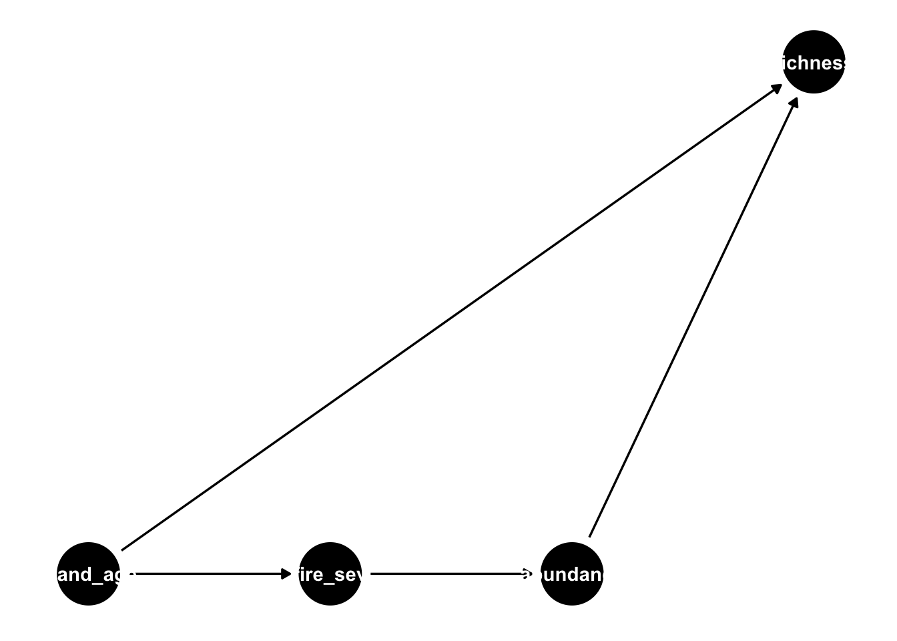
By default, this just uses the variable names as labels, which (as you can see) don’t fit well with the nodes. We can update this to show the manually defined labels, and the exposure/outcome variables as follows:
ggdag_status(grace_dag, use_labels = "label", text = FALSE) +
theme_dag()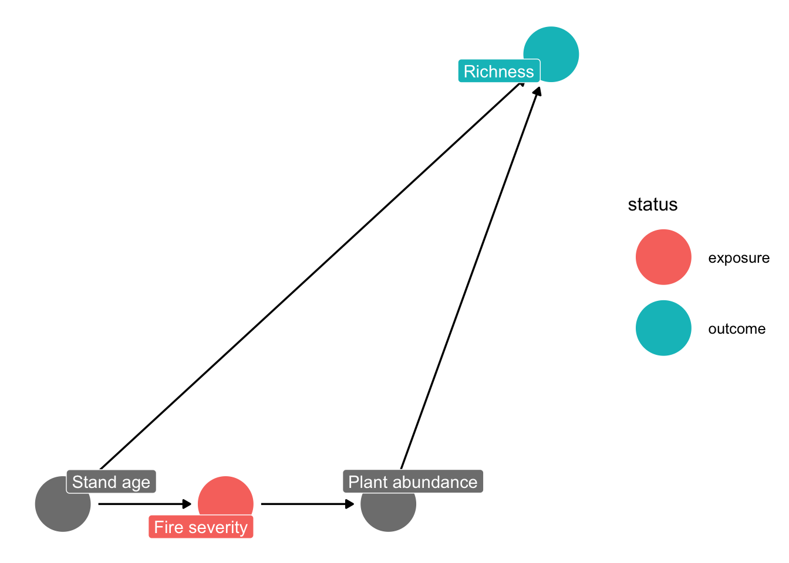
In Python, the graphical model object has a method to plot it using networkx:
grace_dag.draw()<graphviz.graphs.Digraph object at 0x13d3cc880>You can get the list of conditional independencies as follows:
impliedConditionalIndependencies(grace_dag)abnd _||_ stn_ | fr_s
fr_s _||_ rchn | abnd, stn_Here the syntax is var1 is conditionally independent (_||_) on var2 given (|) var3
grace_dag.get_all_independence_relationships()[('plant_abundance', 'stand_age', {'fire_severity'}), ('fire_severity', 'richness', {'plant_abundance', 'stand_age'})]Here the syntax is ((var1, var2, {var3})): var1 is conditionally independent on var2 given var3
These show that:
- stand age and abundance are conditionally independent given fire severity
- fire severity and richness are conditionally independent given abundance and stand age
The DAGs can be used to show all possible paths between the exposure (fire) and outcome (richness):
paths(grace_dag)$paths
[1] "fire_sev -> abundance -> richness" "fire_sev <- stand_age -> richness"
$open
[1] TRUE TRUEYou can also visualize these:
ggdag_paths(grace_dag)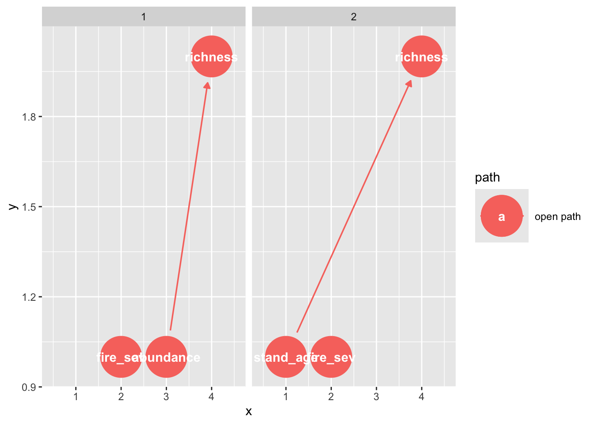
In Python, we can extract the backdoor paths - these are usually paths through a confounding variable (here, the stand age)
grace_dag.get_all_backdoor_paths("fire_severity", "richness")[['fire_severity', 'stand_age', 'richness']]Finally, we can use these DAGs to identify the adjustment sets
In R, we can extract these directly, as the exposure and outcome were preset when making the DAG. Note that you can specify these in this function, if you want to test a different part of the graph.
adjustmentSets(grace_dag){ stand_age }You can also visualize these:
ggdag_adjustment_set(grace_dag)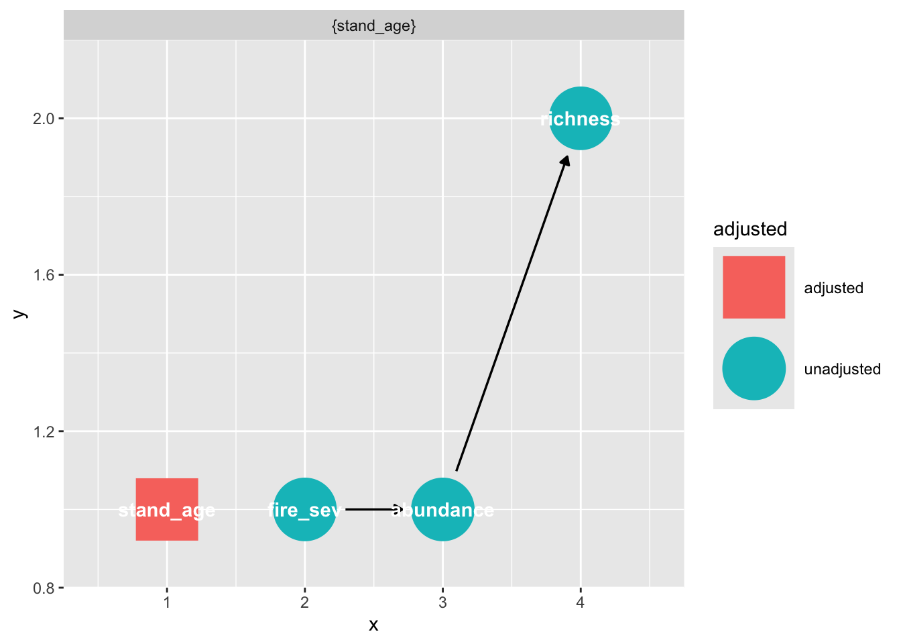
To get the adjustment set in Python, we need to specify the exposure and outcome.
grace_dag.get_all_backdoor_adjustment_sets("fire_severity", "richness")frozenset({frozenset({'stand_age'})})